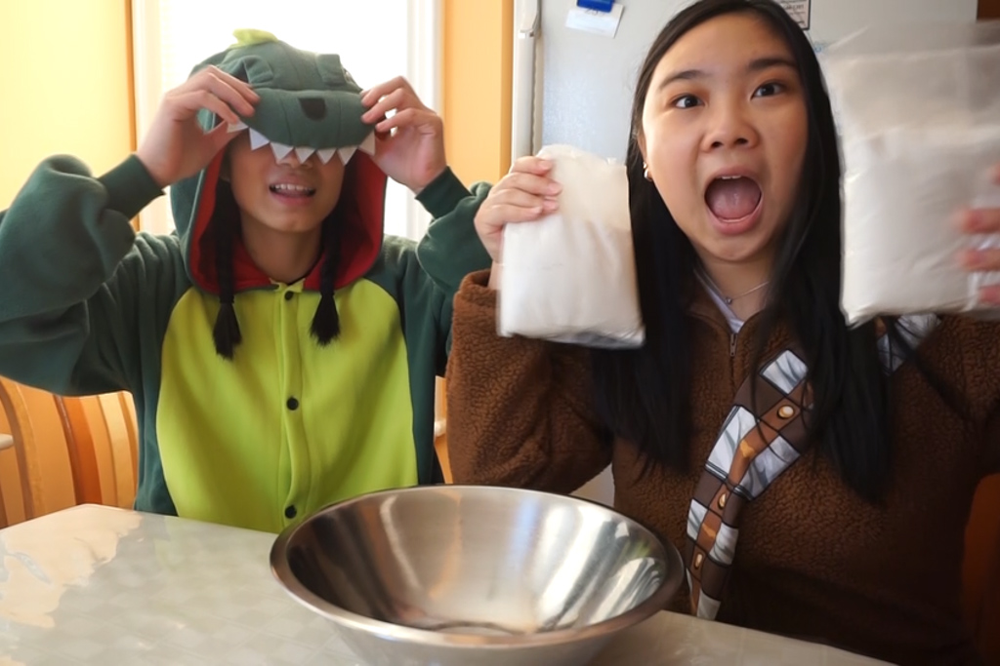
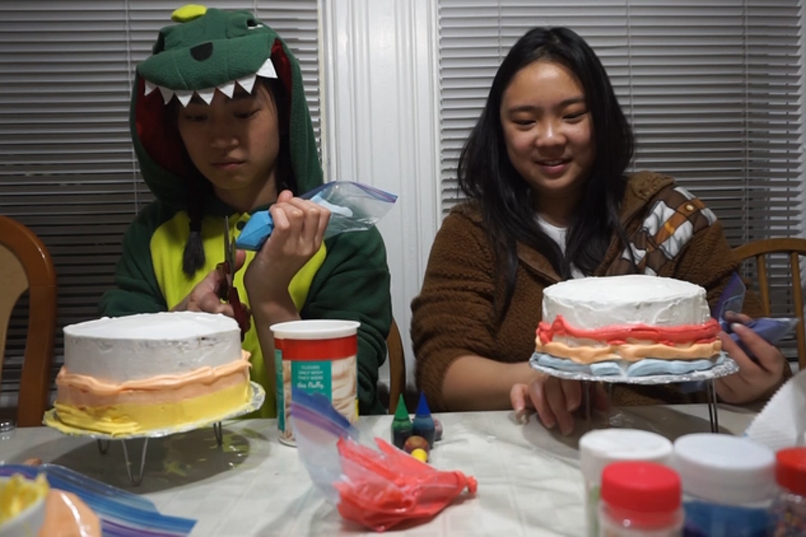
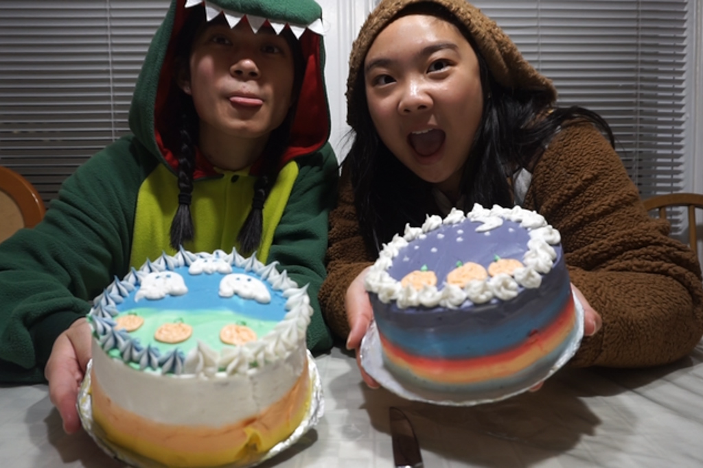

Halloween Shenanigans
Nov 5 - Written by Bonnie and Emily
We’ve been seeing a lot of cake frosting videos trending on Instagram lately that has completely mesmerized us so we thought we’d give it a go--turns out its a real frosting galore.
There's been a lot trending on Instagram, but of course as foodies, one of the trends that is popping up on our feed is cake videos!! Frosting cake, drawing on cake, eating cake, all the delicious good stuff. The frosting videos were so satisfying we thought we’d give it a go on Halloween instead of doing the usual good ol’ pumpkin carving. Just to be festive, we also thought running around in onesies--and a mask--was the way to go.
Don’t be fooled by our use of box cake mix cause we are pretty darn good bakers, but since we were focused on frosting the cake we decided to make it a little easier on ourselves and buy store bought frosting and box cake mix. To give you a better insight into how much sugar we piled onto our two mini cakes, we bought a total of six tubs of easy whipped frosting and two boxes of cake mix -- probably wasn’t the best idea to be eating cake and frosting as we went along but it's Halloween, the sugar rush is a must!
Our cake and frosting ingredients may be store bought but our tools were definitely DIY material! Butter knives, upside down bowls, and ziploc bags were the realistic approach to our not so aesthetic Instagram frosting process (which I’m sure you all probably would’ve done at home too). After a few cake dropping scares and frosting disasters, our mini cakes turned out not half bad! It definitely wasn’t the most edible cake for us considering the amount of frosting we used, but definitely a nice change up from baking edible cakes. Did I forget to mention that with the amount of frosting and cake, both of our cakes weighed more than a whopping 2 pounds--the little dessert really packs a punch.
